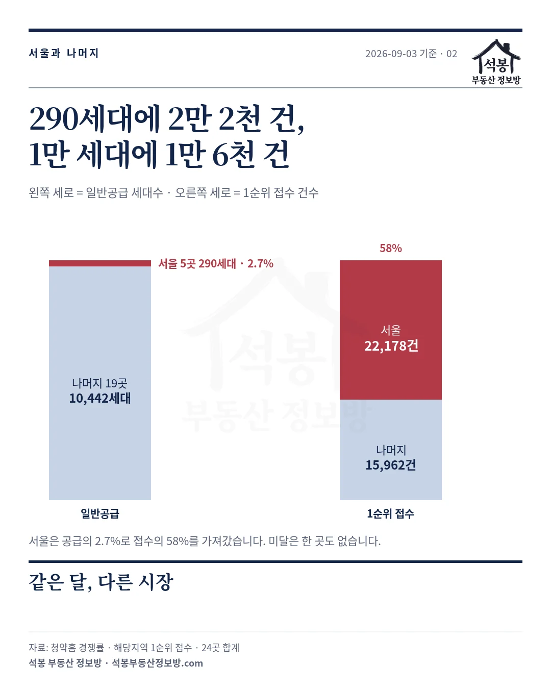
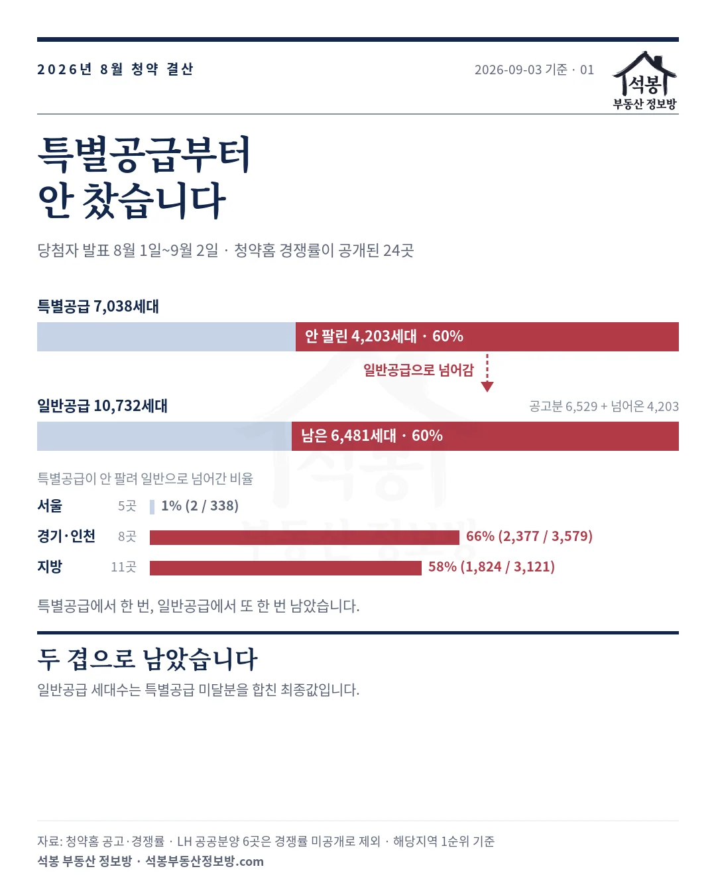
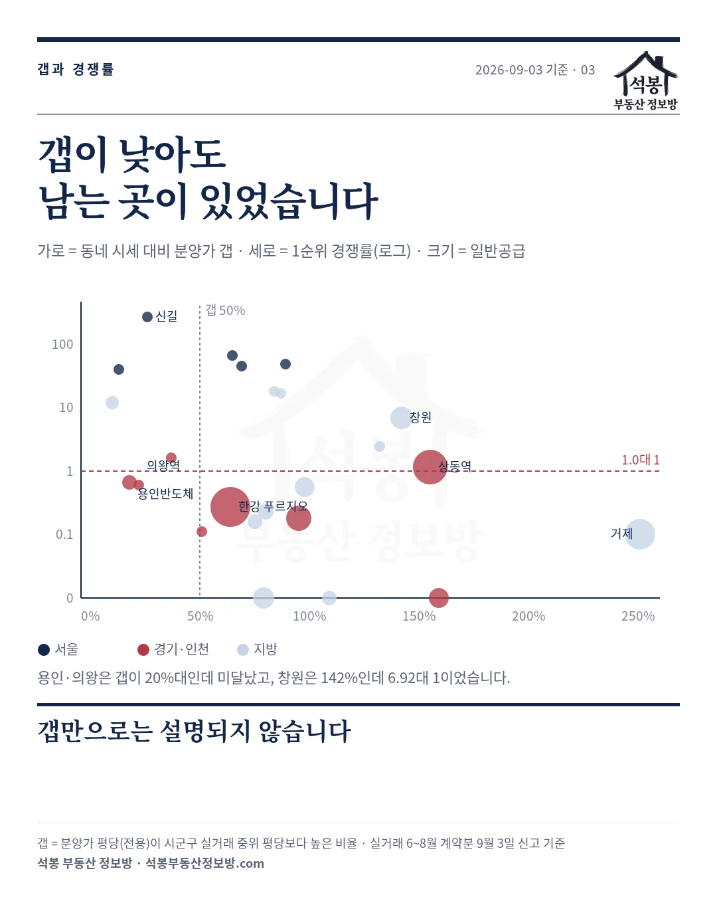

2026년 8월 1일부터 9월 2일까지 당첨자를 발표한 아파트 가운데 청약홈에 경쟁률이 공개된 24곳을 전부 세었습니다. 일반공급 10,732세대에 1순위 38,140건이 들어왔고, 16곳에서 6,481세대가 남았습니다.
그런데 그 전에 특별공급부터 안 찼습니다. 특별공급 7,038세대 중 4,203세대(60%)가 팔리지 않아 일반공급으로 넘어왔고, 일반공급에서 또 60%가 남았습니다. 두 겹으로 남은 달이었습니다.
하나. 24곳 전체를 먼저 펼칩니다
경쟁률은 해당지역 1순위 접수 건수를 일반공급 세대수로 나눈 값이고, 특별공급과 2순위는 넣지 않았습니다. 일반공급 세대수는 특별공급 미달분이 넘어온 것을 합친 최종값입니다. 공고문의 일반공급 세대수와 다를 수 있습니다. 미달은 청약홈 경쟁률 칸의 (△숫자) 표기를 따랐고, 숫자가 남은 세대수입니다.
| 발표 | 단지 | 지역 | 일반 | 1순위 | 미달 | 남음 | 갭 |
|---|---|---|---|---|---|---|---|
| 8/27 | 더샵 신길센트럴시티(조합원 취소분) | 서울 | 33 | 265.42 | 0/13 | 0 | 26% |
| 8/28 | 써밋 클라비온 | 서울 | 83 | 66.78 | 0/7 | 0 | 65% |
| 8/5 | 월계 중흥S-클래스 리비에르 | 서울 | 62 | 48.77 | 0/4 | 0 | 89% |
| 8/31 | 충정로역자이르네 | 서울 | 84 | 44.52 | 0/5 | 0 | 69% |
| 9/2 | 쌍용 더 플래티넘 서대문 | 서울 | 28 | 39.71 | 0/3 | 0 | 13% |
| 9/1 | 포레나힐스테이트 진주 | 경남 | 182 | 18.14 | 0/6 | 0 | 84% |
| 8/11 | 더샵 트리센트 | 부산 | 68 | 16.65 | 0/3 | 0 | 87% |
| 8/19 | 세종 우미 린 센터파크 | 세종 | 243 | 11.86 | 0/8 | 0 | 10% |
| 8/4 | 창원 한신더휴 메가센텀 | 경남 | 707 | 6.92 | 1/12 | 21 | 142% |
| 8/19 | 두산위브더제니스 대연 | 부산 | 128 | 2.46 | 2/5 | 26 | 132% |
| 8/3 | 역북 서희스타힐스 프라임시티(조합원 취소분) | 경기 | 5 | 1.60 | 1/4 | 1 | 37% |
| 9/1 | 상동역 롯데캐슬 시그니처 | 경기 | 1,606 | 1.15 | 6/12 | 389 | 155% |
| 8/27 | 용인반도체클러스터 동일하이빌 파크밸리 | 경기 | 295 | 0.67 | 4/6 | 167 | 18% |
| 9/2 | 의왕역 한신더휴 | 경기 | 52 | 0.60 | 3/4 | 24 | 22% |
| 9/1 | 제일풍경채 첨단3지구 | 광주 | 587 | 0.56 | 3/4 | 304 | 98% |
| 8/20 | 한강 푸르지오 리버프론트 | 경기 | 2,133 | 0.27 | 11/12 | 1,550 | 64% |
| 8/26 | 달서자이 제니크 | 대구 | 345 | 0.23 | 2/2 | 265 | 80% |
| 8/28 | 두산위브더제니스 부천 | 경기 | 891 | 0.18 | 6/6 | 729 | 95% |
| 9/1 | 아르티엠 라 테라스 | 전북 | 290 | 0.16 | 4/4 | 243 | 75% |
| 9/1 | 오남역 서희스타힐스 여의재 1단지 | 경기 | 149 | 0.11 | 4/4 | 133 | 51% |
| 8/11 | 센트레빌 아스테리움 거제 | 경남 | 1,305 | 0.10 | 3/3 | 1,179 | 251% |
| 8/4 | 이천 휴먼빌 클래스원 | 경기 | 534 | 0.01 | 3/3 | 530 | 159% |
| 8/11 | 리쉐스302 | 강원 | 302 | 0.00 | 7/7 | 301 | 109% |
| 8/11 | 아산테크노밸리 더원 7차 | 충남 | 620 | 0.00 | 3/3 | 619 | 79% |
갭은 분양가 평당(전용)이 그 시군구 실거래 중위 평당보다 몇 % 높은가입니다. 실거래는 2026년 6~8월 계약분 가운데 9월 3일까지 신고된 것이고, 8월 계약분은 아직 차오르는 중입니다.
LH 공공분양과 신혼희망타운 6곳(고양창릉 S-3·S-4, 역곡지구, 군포대야미, 수원당수, 시흥거모)은 청약홈 경쟁률 자료에 실리지 않아 이 글에서 뺐습니다. 그래서 8월 전수가 아니라 24곳입니다.
가입하시면 지역 시장조사 보고서(약식)를 2회 무료로 요청하실 수 있습니다.
둘. 서울과 나머지는 다른 시장이었습니다
| 곳 | 일반공급 | 1순위 접수 | 중위 경쟁률 | 미달 | |
|---|---|---|---|---|---|
| 서울 | 5 | 290세대 | 22,178건 | 48.77대 1 | 0곳 |
| 경기·인천 | 8 | 5,665세대 | 2,855건 | 0.44대 1 | 8곳 전부 |
| 지방 | 11 | 4,777세대 | 13,107건 | 0.56대 1 | 8곳 |
서울 5곳은 일반공급 290세대에 22,178건이 들어왔습니다. 전체 공급의 2.7%가 전체 접수의 58%를 가져갔습니다. 32개 주택형 중 미달은 하나도 없고, 가장 낮은 곳이 39.71대 1입니다.
경기·인천 8곳은 8곳 전부 미달이 났습니다. 5,665세대에 2,855건이라 두 세대에 한 건꼴입니다. 지방 11곳은 중위가 0.56대 1인데 접수는 13,107건이라 경기·인천보다 많습니다. 창원·부산·진주·세종이 끌어올린 것이고, 지방 안에서도 갈립니다.

셋. 특별공급에서 한 번, 일반공급에서 또 한 번
청약은 특별공급을 먼저 받고 남은 물량을 일반공급에 얹습니다. 그래서 일반공급 최종 세대수가 공고보다 커지면 특별공급이 안 찼다는 뜻입니다. 24곳의 공고문과 경쟁률 자료를 대조하면 그 크기가 나옵니다.
특별공급 7,038세대 중 4,203세대(60%)가 일반공급으로 넘어왔습니다. 서울 5곳은 338세대 중 2세대(1%)만 넘어왔고, 경기·인천은 3,579세대 중 2,377세대(66%), 지방은 3,121세대 중 1,824세대(58%)였습니다.
거제·이천·리쉐스302·아산은 특별공급이 99~100% 넘어왔습니다. 신혼부부·생애최초·다자녀 몫으로 내놓은 자리에 거의 아무도 넣지 않았다는 뜻입니다. 공고 때 일반공급은 6,529세대였는데 그 물량이 얹혀 1만 732세대가 됐고, 거기서 다시 6,481세대가 남았습니다.

넷. 우리가 세운 기준을 한 달 치로 다시 재봤습니다
8월 23일 상동역 편에서 저희는 동네 시세 대비 갭이 50%를 넘으면 중위 0.6대 1에 미달 60%라는 기준을 냈습니다. 그 잣대를 이번 24곳에 대면 이렇습니다.
| 갭 | 곳 | 중위 경쟁률 | 미달 | 8월 23일 편 기준 |
|---|---|---|---|---|
| 50% 미만 | 6 | 6.73대 1 | 3곳(50%) | 4.2대 1 · 15% |
| 50% 이상 | 18 | 0.42대 1 | 13곳(72%) | 0.6대 1 · 60% |
갭이 큰 쪽은 기준과 거의 같습니다. 그런데 갭이 작은 쪽에서 미달이 50%가 나왔습니다. 용인반도체클러스터는 갭 18%, 의왕역 한신더휴는 갭 22%인데 둘 다 미달입니다. 반대로 창원 한신더휴는 갭 142%인데 6.92대 1이고, 진주는 84%인데 18.14대 1입니다.
갭만으로는 설명이 안 됩니다. 시세보다 싸게 내놔도 그 동네에 사려는 사람이 없으면 남고, 시세보다 비싸도 사람이 몰리는 동네는 됩니다. 갭은 방향을 잡아 주지만 입지를 대신하지 못합니다.
분양가상한제도 같은 얘기를 합니다. 상한제가 적용된 5곳 중 세종만 11.86대 1로 마감됐고, 용인·광주 첨단·김포·아산 4곳은 미달입니다. 상한제는 시세보다 싸게 파는 제도인데 넷이 남았습니다.
한 가지 더 짚어 두면, 일반공급 300세대를 넘긴 10곳은 예외 없이 전부 미달이었습니다. 이 열 곳에 서울은 하나도 없으니 규모 자체보다 자리의 문제이겠지만, 한꺼번에 많이 내놓으면 그 동네가 소화할 양을 넘긴다는 점은 이번 달 숫자가 그대로 보여 줍니다.

다섯. 이야기가 있는 아홉 곳
더샵 신길센트럴시티 · 265.42대 1 · 8월 최고
영등포구 신길동 재개발의 조합원 취소분 67세대입니다. 일반공급은 공고 31세대에 특별공급 전환 2세대를 더해 33세대였고, 여기에 8,759건이 들어왔습니다. 51.99㎡(15.7평) B형은 5세대에 1,914건으로 382.8대 1이었습니다.
분양가 12억 대 초반, 갭 26%로 서울 5곳 중 두 번째로 낮습니다. 투기과열지구에 청약과열지역이고 당첨가점 최저는 64점이었습니다.
월계 중흥S-클래스 · 48.77대 1 · 두 세대에 210명
노원구 월계동 62세대에 3,024건입니다. 네 주택형 모두 해당지역 1순위에서 마감됐고, 평당으로 가장 싼 84㎡에 가장 많이 몰렸습니다. 월계 중흥S-클래스 8월 청약 결과, 두 세대에 210명이 몰렸습니다에 따로 정리했습니다.
상동역 롯데캐슬 시그니처 · 1.15대 1 · 절반 미달
부천 원미구 상동 1,606세대에 1,853건입니다. 12개 주택형 중 6개가 미달이었고 389세대가 남았습니다. 84㎡대는 1.46대 1로 넘겼지만 113㎡ 이상은 0.43대 1로 셋 다 남았습니다. 상동역 롯데캐슬 9월 청약 결과, 1,606세대 중 389세대가 남았습니다에 따로 썼습니다.
두산위브더제니스 부천 · 0.18대 1 · 같은 부천, 다른 결과
부천 소사구 소사본동 정비사업 1,158세대입니다. 상동역과 같은 부천이지만 구가 다르고, 분양가도 다릅니다. 84㎡(25.7평)가 11억 2,300만~11억 8,200만원으로 상동역(14억 9,900만~16억 3,800만원)보다 4억 넘게 쌉니다.
그런데 6개 주택형 전부 미달이고 891세대 중 729세대가 남았습니다. 특별공급도 633세대 중 366세대가 넘어왔습니다. 싼 쪽이 더 안 됐습니다.
이유는 그 동네 새 아파트 값과 견주면 두산위브 쪽이 더 비쌌기 때문입니다. 소사구에서 2020년 이후 준공한 84㎡ 실거래 중위가 8억 50만원인데 분양가는 그보다 42% 위입니다. 상동역은 원미구 신축 84㎡(11억 9,800만원) 대비 34%였습니다.
소사본동 84㎡ 전체 실거래 중위는 5억 5,500만원입니다. 84㎡가 5억대에 거래되는 동네에서 11억대가 열린 셈이고, 상동·중동은 84㎡ 6억 9,800만원에 신축 12억이 이미 있는 동네입니다. 절대 가격이 아니라 그 동네가 감당하는 값 안에 있는가가 갈랐습니다.
한강 푸르지오 리버프론트 · 0.27대 1 · 8월 최대 물량
김포 고촌읍 향산리 2,432세대입니다. 분양가상한제가 적용돼 84㎡가 7억 3,700만~7억 7,300만원인데, 특별공급 1,228세대 중 929세대가 안 팔려 일반으로 넘어왔고 일반공급 2,133세대 중 1,550세대가 남았습니다. 84㎡ A형 하나만 725세대인데 216건이 들어와 509세대가 남았습니다. 12개 주택형 중 11개 미달입니다.
창원 한신더휴 메가센텀 · 6.92대 1 · 갭 142%인데
창원 마산회원구 회원동 707세대에 4,891건입니다. 갭이 142%로 24곳 중 네 번째로 높은데 12개 주택형 중 11개가 마감됐습니다. 84㎡가 6억 1,150만원에 156세대인데 2,356건이 몰려 15.10대 1이었습니다. 갭 155%인 상동역이 1.15대 1이었으니 갭이 비슷해도 동네가 다르면 답이 다릅니다.
아산테크노밸리 더원 7차 · 0.00대 1 · 620세대에 1건
분양가상한제로 84㎡가 4억 2,600만~4억 2,700만원입니다. 갭 79%인데 3개 주택형에 접수가 합쳐서 1건이었습니다. 특별공급 348세대도 346세대가 넘어왔습니다. 값이 문제가 아니었다는 뜻입니다.
의왕역 한신더휴 · 0.60대 1 · 갭 22%인데
의왕시 52세대에 31건입니다. 갭 22%로 경기·인천 8곳 중 두 번째로 낮은데 4개 주택형 중 3개가 미달입니다. 84㎡가 9억 4,000만원에 12세대인데 3건이 들어왔습니다. 싸게 내놔도 안 되는 곳이 수도권 안에 있습니다.
센트레빌 아스테리움 거제 · 0.10대 1 · 갭 251%
거제시 1,305세대에 126건입니다. 갭 251%로 24곳 중 가장 높고, 특별공급 682세대 중 680세대가 안 팔려 넘어왔습니다. 84㎡ A형 941세대에 85건이 들어와 856세대가 남았습니다. 1,179세대가 남아 남은 세대수로도 24곳 중 2위입니다.
남는 것
정리하면 이렇습니다. 서울은 5곳 다 됐고, 경기·인천은 8곳 다 안 됐습니다. 지방 11곳 중 미달 없이 마감된 곳은 진주·부산 트리센트·세종 셋뿐입니다. 특별공급이 60% 남고 일반공급이 60% 남은 달이었습니다.
갭이 낮아도 남는 곳이 있고 갭이 높아도 되는 곳이 있었습니다. 분양가상한제도 넷은 못 막았습니다. 값보다 자리가 먼저였습니다. 다만 300세대를 넘긴 곳은 이번 달 예외 없이 남았습니다.
9월에는 시티오씨엘 9단지(9월 8일 발표)·문수데시앙2(9월 14일)·브라운스톤 월곡(9월 16일)·올 뉴 챔피언스시티 1차와 그랑라크 에일린의 뜰(9월 22일) 결과가 나옵니다. 같은 방식으로 다시 세겠습니다.
원자료: 청약홈 입주자모집공고·경쟁률·당첨가점(당첨자 발표 2026년 8월 1일~9월 2일, 경쟁률 공개 24곳)과 국토교통부 아파트 매매 실거래(2026년 6~8월 계약분 중 2026년 9월 3일까지 신고된 것, 해제 제외). 기준일 2026년 9월 3일
경쟁률은 해당지역 1순위 접수 건수를 일반공급 세대수로 나눈 값이고, 일반공급은 특별공급 전환분을 합친 최종값입니다. 미달은 청약홈 (△숫자) 표기, 갭은 분양가 세대가중 평당(전용)이 시군구 실거래 중위 평당보다 높은 비율입니다
⚠️LH 공공분양·신혼희망타운 6곳은 경쟁률 미공개로 제외했습니다. 신고 시차 때문에 8월 계약분은 아직 차오르는 중이라 갭은 이후 조금씩 바뀝니다. 가점은 마감된 주택형에서만 산출됩니다
편집·제작: 석봉 부동산 정보방 · 투자 권유가 아닙니다.